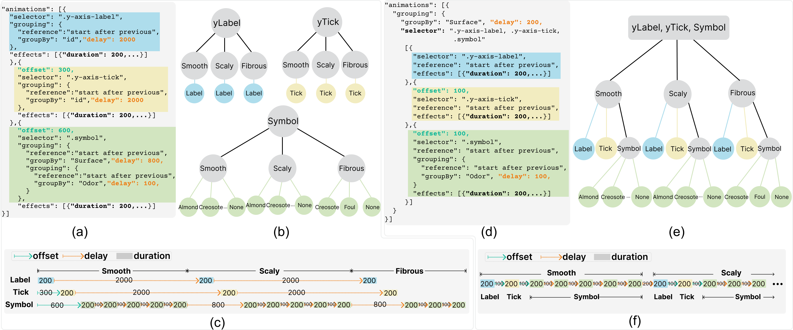
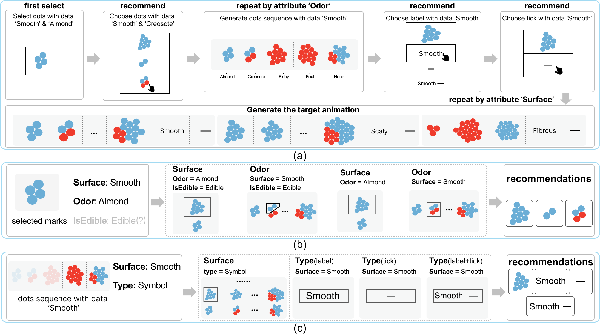
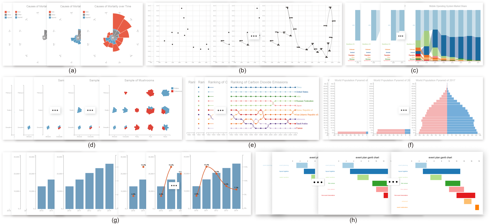

CAST2: Authoring Data-Driven Chart Animations
Yuancheng Shen, Bongshin Lee, Yunhai Wang

Figure 1: CAST2 enables the interactive construction of a variety of chart animations. Its interface consists of four panels: (a) data panel; (b) chart panel; (c) animation panel; and (d) keyframe panel. In this case, the system is about halfway through the animation of a 'bar chart', showing the distribution of the population by gender in different age groups. Please visit the CAST2's website ( https://canisstudio.github.io/CAST2) to see the animation.
Abstract
We present CAST, an authoring tool that enables the interactive creation of chart animations. It introduces the visual specification of chart animations consisting of keyframes that can be played sequentially or simultaneously, and animation parameters (e.g., duration, delay). Building on Canis, a declarative chart animation grammar that leverages data-enriched SVG charts, CAST supports auto-completion for constructing both keyframes and keyframe sequences. It also enables users to refine the animation specification (e.g., aligning keyframes across tracks to play them together, adjusting delay) with direct manipulation and other parameters for animation effects (e.g., animation type, easing function) using a control panel. In addition to describing how CAST infers recommendations for auto-completion, we present a gallery of examples to demonstrate the expressiveness of CAST and a user study to verify its learnability and usability. Finally, we discuss the limitations and potentials of CAST as well as directions for future research.
Canis Grammar

Figure 2: A comparative display of the Canis specification, underscoring the differences between (a) the original version and (d) the enhanced version integrated into CAST2. Correspondingly, (b) and (e) visually represent the tree structure of each specification. After compiling the specifications, the resultant animation timelines are depicted at the bottom. Specifically, (c) refers to the original version, which comprises three timelines, while (f) represents the improved variant that consolidates the animation into a single timeline.
Visual Specification

Figure 3: The animation of the nightingale chart within CAST2. Initially, the red bars sequentially displayed from January to December. The interface facilitates the binding of timing attributes or the sorting of keyframes to enhance the animation control. Additionally, the inclusion of hierarchical titles, which represent data attributes for grouping the animation, assists users in understanding the animation's organization more effectively.
Interaction Mechanisms

Figure 4: Illustration of the user interaction workflow in CAST2, highlighting the sequence of steps and interactions involved in crafting an animation. Initially, the system presents potential next keyframes to the user, enabling a preview of the suggestion by hovering over it (a). Subsequently, the user can select specific marks within the desired next keyframe to guide the system's suggestions (b). Following this, the system automatically refreshes the recommendation list (c).
Same-speed Animation & Sorting
Figure 5: A visual demonstration of how to adjust timing attributes within CAST2. Specifically, (a) displays the foundational data table used for creating the Gantt chart. Then, (b) shows the process of arranging the keyframes by utilizing the ``Total'' data attribute. Lastly, (c) illustrates linking the start time and duration to specific data attributes.
Next Keyframe Recommendation

Figure 6: An illustrative representation of the Keyframe-Tree (KF-Tree) for the mushroom animation coupled with the mark selection completion process under CAST2. This combined depiction demonstrates the structure and component relationships within the KF-Tree, and the sequence of steps and interactions involved in the completion process.
Example Gallery

Figure 6: Eight example chart animations demonstrating the expressiveness of CAST and CAST2. We used the first seven chart animations (a-g) as tasks in our user study in Section 4. In addition to these, more examples can be found with the input charts, descriptions, and videos illustrating the creation processes in the website ( https://canisstudio.github.io/CAST2).